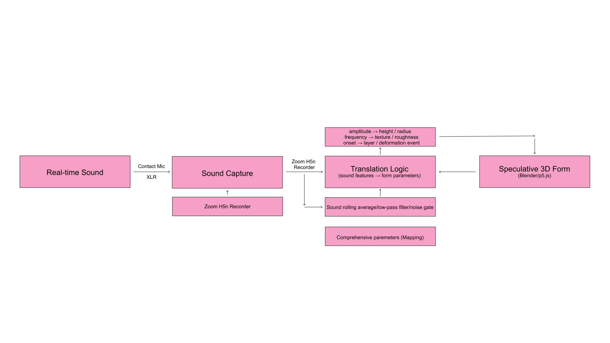
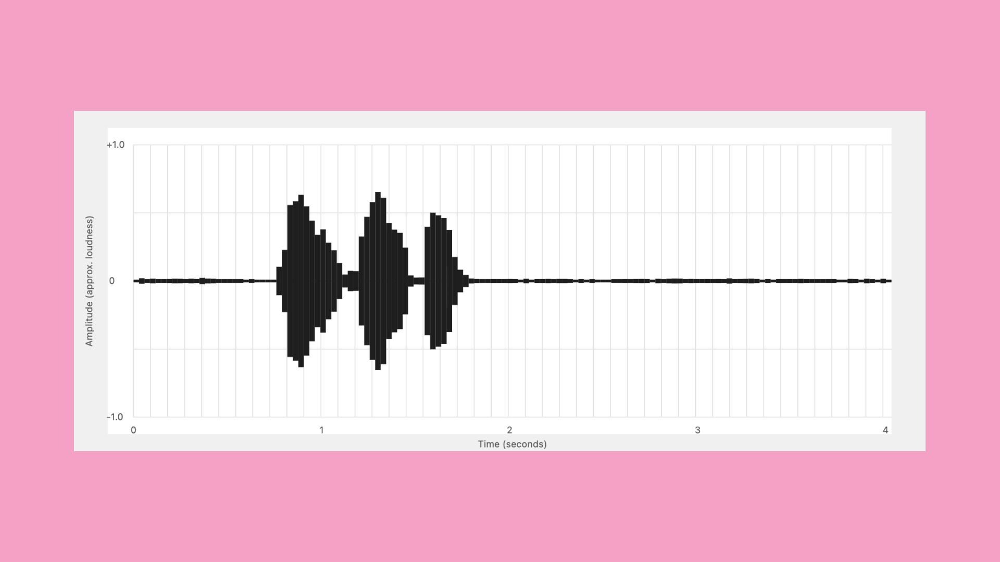
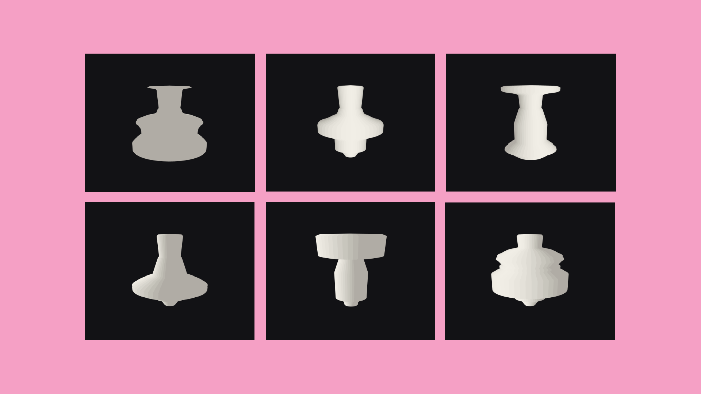
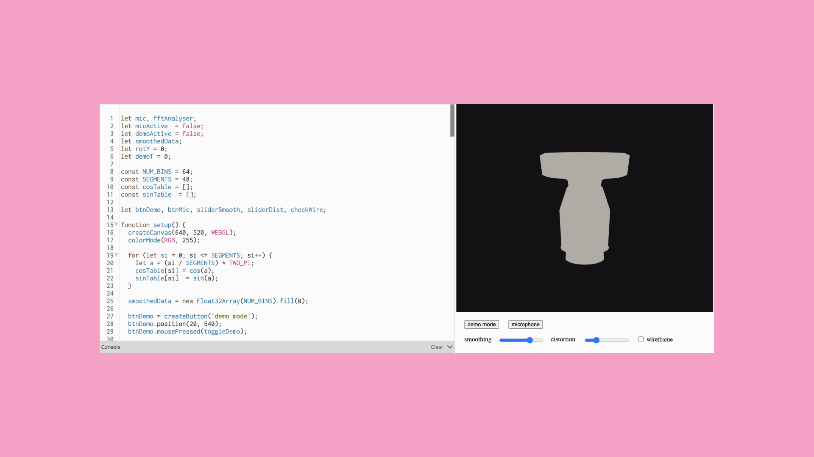

Overview
This project transforms real-time sound data into a dynamic three-dimensional ceramic vessel
form. Using a microphone to capture ambient sound, the system analyzes the audio through Fast
Fourier Transform (FFT), then maps the energy of different frequency bands onto the radius of a
rotational vessel profile. Built through the logic of wheel-throwing, the vessel continuously
deforms in response to sound: low frequencies shape the width and volume of the body, while
higher frequencies disturb the contour of the neck and shoulder. Each moment of sound rewrites
the form of the object.
Rather than focusing on the creation of a complete virtual ceramics tool, this project centers
on the moment of translation between sound and material form. It asks what happens when
temporal, fluid, and unstable sonic data attempts to become fixed as volume, contour, and mass.
In this process, tensions emerge between computational logic and the constraints of ceramic
form—between mapping and making, signal and surface, control and failure. The vessel never fully
stabilizes; it exists only within the ongoing present of sound.
Concept

This project translates real-time sound into speculative 3D vessel forms. Live audio is captured
through a contact mic and processed to extract sound features such as amplitude, frequency, and
temporal events. These features are filtered, averaged, and mapped through a translation logic
system that converts sound data into geometric parameters—height, radius, texture, and
deformation.
Rather than directly modeling form, the vessel emerges from a computational negotiation between
signal input and mapping rules. The work focuses on designing this translation layer, where
sound becomes structure and data becomes morphology.
Process
This code was first developed as a tool for translating sound into a physical ceramic-making
instrument. Rather than using sound only as a visual waveform, the program analyzes an audio
file in p5.js and records its amplitude over time. Each moment of sound is compressed into a
series of vertical pixel columns, where louder moments create taller forms and quieter moments
create smaller ones. Through adjustable controls such as pixel resolution and amplitude scale,
the waveform can shift between a rough, tool-like contour and a more detailed acoustic profile.
The exported waveform becomes a profile that can be laser-cut into a rib tool for wheel
throwing. In this process, sound is not directly turned into a vessel, but into a shaping
device: an intermediate object that carries the trace of sound and transfers it onto clay
through touch, pressure, and rotation. The code therefore creates a bridge between digital audio
data and hand-based ceramic making.

function recordCurrentFrame() {
let wave = fft.waveform(); // Array of [-1, 1]
let peak = 0;
let sumsq = 0;
for (let i = 0; i < wave.length; i++) {
let v = wave[i];
let av = Math.abs(v);
if (av > peak) peak = av;
sumsq += v * v;
}
let rms = Math.sqrt(sumsq / wave.length);
// Combined amplitude: smooth + strong peaks
let amp = 0.7 * rms + 0.3 * peak;
amp = constrain(amp, 0, 1);
let t = sound.currentTime();
// Store sound as time + amplitude data
recordedWave.push({ t: t, a: amp });
}
This code is the core sound-to-data translation. It reads the audio waveform, calculates the sound's amplitude by combining overall loudness and peak intensity, and stores each value with its timestamp. These time-amplitude points become the basis for generating the waveform profile, the laser-cut rib tool, and later the 3D vessel form.

I use Three.js because it allows sound data to become a real-time 3D form in the browser. My earlier p5.js code translated sound into a flat waveform for making a laser-cut rib tool, but Three.js extends this logic into volume. It allows the waveform or FFT data to shape the height, radius, and surface of a virtual ceramic vessel. Instead of modeling a fixed object, the system generates a form that continuously responds to sound, making the vessel a live translation between sonic data and ceramic geometry.

Code 1: Extracting the sound spectrum
function getMicFFT() {
let spectrum = fftAnalyser.analyze();
let binSize = floor(spectrum.length / NUM_BINS);
let raw = new Float32Array(NUM_BINS);
for (let i = 0; i < NUM_BINS; i++) {
let sum = 0;
for (let j = 0; j < binSize; j++) {
sum += spectrum[i * binSize + j];
}
raw[i] = sum / binSize / 255;
}
let peak = 0;
for (let i = 0; i < NUM_BINS; i++) {
if (raw[i] > peak) peak = raw[i];
}
if (peak > 0.001) {
for (let i = 0; i < NUM_BINS; i++) {
raw[i] = raw[i] / peak;
}
}
return raw;
}
This section reads live microphone input as FFT spectrum data, compresses the spectrum into 64 frequency bands, and normalizes the values into a 0–1 range. These values become the raw sound material used to deform the vessel.
Code 2: Converting sound data into a vessel profile
function getProfile(fftData, distortion) {
let eq = equaliseFFT(fftData);
let pts = [];
let totalH = 260;
pts.push(createVector(0, totalH / 2));
for (let i = 0; i < NUM_BINS; i++) {
let t = i / (NUM_BINS - 1);
let y = totalH / 2 - t * totalH;
let bias;
if (t < 0.10) bias = 0.30 + t * 3.5;
else if (t < 0.48) bias = 1.00 + (t - 0.10) * 0.20;
else if (t < 0.70) bias = 1.08 - (t - 0.48) * 1.60;
else bias = 0.65 + (t - 0.70) * 0.50;
let r = 4 + bias * 55 + eq[i] * distortion * 20;
pts.push(createVector(r, y));
}
return pts;
}
This function is the core sound-to-form mapping. Each FFT value is assigned to a vertical position on the vessel and converted into a radius. A built-in bias creates a basic ceramic profile, while the sound data adds deformation to the body, shoulder, and neck.
Code 3: Rotating the profile into a 3D vessel
function drawStrip(p0, p1, si, wire) {
let c0 = cosTable[si], s0 = sinTable[si];
let c1 = cosTable[si+1], s1 = sinTable[si+1];
let x00 = p0.x * c0;
let z00 = p0.x * s0;
let y00 = p0.y;
let x10 = p1.x * c0;
let z10 = p1.x * s0;
let y10 = p1.y;
let x01 = p0.x * c1;
let z01 = p0.x * s1;
let y01 = p0.y;
let x11 = p1.x * c1;
let z11 = p1.x * s1;
let y11 = p1.y;
beginShape();
vertex(x00, y00, z00);
vertex(x10, y10, z10);
vertex(x11, y11, z11);
vertex(x01, y01, z01);
endShape(CLOSE);
}
This section converts the 2D vessel profile into a 3D rotational form. Each profile point uses its radius and height to generate circular coordinates around the central axis, producing a mesh-like ceramic vessel.
Result
This coding system translates live sound into a responsive 3D ceramic vessel. Microphone input is analyzed through FFT, compressed into frequency bands, and mapped onto the vessel's vertical profile. A base ceramic logic defines the body, shoulder, neck, and opening, while sound data continuously changes the radius and surface of the form. By rotating this sound-driven profile into three dimensions, the code creates a live vessel that is not manually modeled, but generated through the interaction between sound, data, and ceramic form.